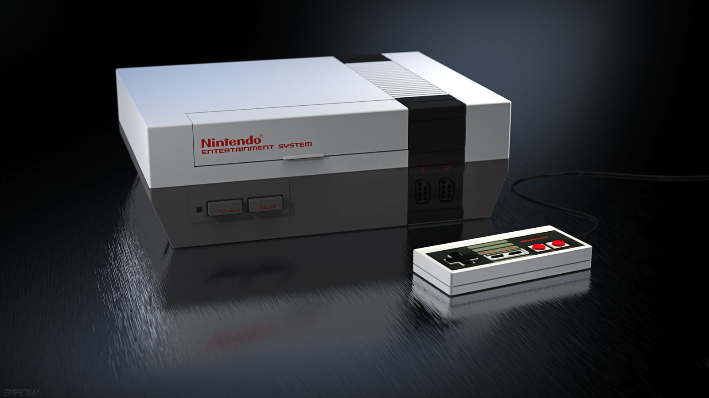

The Nintendo Entertainment System (NES), (called the Famicom in Japan) was the first Nintendo console. It was an 8-bit home video game console released in America in October 1985. Due to advancements in electronics at the time, Nintendo's president, Hiroshi Yamauchi, called for a simple, cheap console that could run arcade games on cartridges. Some of the most popular NES games included, Super Mario Bros, released in 1985, The Legend of Zelda, released in 1986, Metroid, released in 1986, and Mega Man, released in 1987. The NES revitalized the video game industry, making it one of the most memorable and important video game consoles ever.